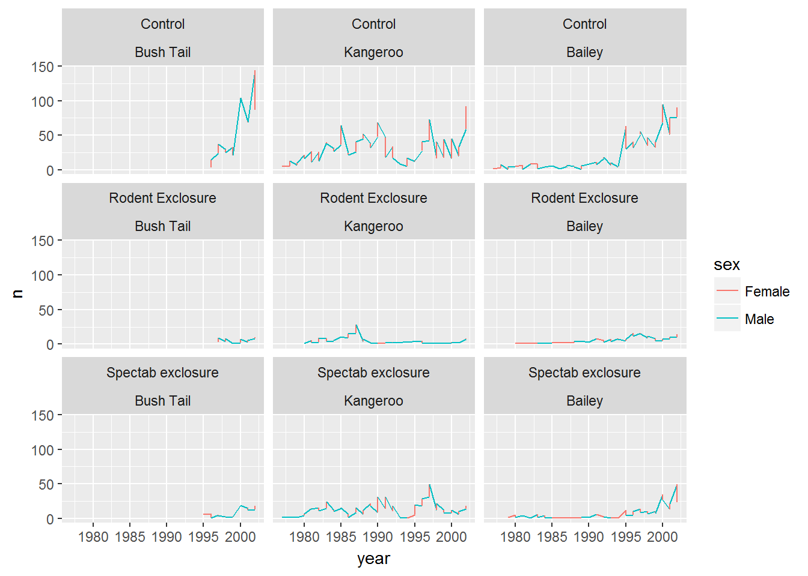

Learning Objectives
By the end of this lesson the learner will:
- Produce scatter plots, bloxplots, and time series plots using ggplot.
- Set universal plot settings.
- Modify the aesthetics of an existing ggplot plot (including axis labels and color).
- Build complex and customized plots from data in a dataframe.
- Combine plotting with modelling to explore data.
This lesson will take the tidy data and use it to explore the data for interesting patterns, and then iterate through further cycles of exploration to demonstrate how plotting helps guide our understanding. If time, this will include generating a simple model of a subset of the data.
THE CODE BELOW IS A PLACEHOLDER FOR THE LESSON.
# Load packages and data -------------------------------------------------------
library(tidyverse)## Loading tidyverse: ggplot2
## Loading tidyverse: tibble
## Loading tidyverse: tidyr
## Loading tidyverse: readr
## Loading tidyverse: purrr
## Loading tidyverse: dplyr## Conflicts with tidy packages ----------------------------------------------## filter(): dplyr, stats
## lag(): dplyr, stats# Using this we avoid stringsasfactors
surveys <- read_csv("data/portal_data_joined.csv")## Parsed with column specification:
## cols(
## record_id = col_integer(),
## month = col_integer(),
## day = col_integer(),
## year = col_integer(),
## plot_id = col_integer(),
## species_id = col_character(),
## sex = col_character(),
## hindfoot_length = col_integer(),
## weight = col_integer(),
## genus = col_character(),
## species = col_character(),
## taxa = col_character(),
## plot_type = col_character()
## )# Use dplyr and logical operators to remove missing values
surveys_complete <- surveys %>%
filter(species_id != "", # remove missing species_id
!is.na(weight), # remove missing weight
!is.na(hindfoot_length), # remove missing hindfoot_length
sex != "") # remove missing sex
## Extract the most common species_id
species_counts <- surveys_complete %>%
group_by(species_id) %>%
tally %>%
filter(n >= 50)
## Only keep the most common species
surveys_complete <- surveys_complete %>%
filter(species_id %in% species_counts$species_id)
## Subset three species and three conditions
# Control, Rodent Exclosure (rodents kept out), Spectab exclosure (Plants added)
survey_sub <- surveys_complete %>%
filter(species %in% c("penicillatus","ordii","baileyi") & plot_type %in% c("Control","Rodent Exclosure","Spectab exclosure")) %>%
group_by(sex,species)
# Is there a relationship between variables?
# Introduce factors to discuss comparing catergorical variables
# Sex, Year, Month extra are catergories whilst weight is not
# So it's more useful to work with them as factors
survey_sub$sex <- factor(survey_sub$sex)
levels(survey_sub$sex)## [1] "F" "M"# Let's rename them to something more useful
levels(survey_sub$sex) <- c("Female","Male")
# Or in one go using factor labels
survey_sub$sex <- factor(survey_sub$sex,labels=c("Female","Male"))
survey_sub$species <- factor(survey_sub$species,
labels=c("Bush Tail","Kangeroo","Bailey"))
# How do these species compare for size?
ggplot(survey_sub,aes(x=weight,fill=species)) +
geom_density()
# Get annual populations
annual_rat_pop <- survey_sub %>%
group_by(sex,species,year,plot_type) %>%
tally
# Plot rat numbers
# Are the populations changing over time?
ggplot(annual_rat_pop,aes(year,n,group=species,colour=sex)) +
geom_line() +
#geom_smooth() +
facet_wrap(plot_type~species)
Data Carpentry, 2017.
License. Questions? Feedback?
Please file
an issue on GitHub.
On Twitter: @datacarpentry